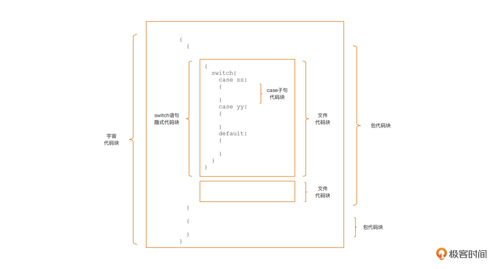
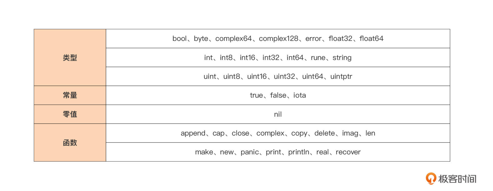

- 00 开篇词 这样入门Go，才能少走弯路.md.html
- 01 前世今生：你不得不了解的Go的历史和现状.md.html
- 02 拒绝“Hello and Bye”：Go语言的设计哲学是怎么一回事？.md.html
- 03 配好环境：选择一种最适合你的Go安装方法.md.html
- 04 初窥门径：一个Go程序的结构是怎样的？.md.html
- 05 标准先行：Go项目的布局标准是什么？.md.html
- 06 构建模式：Go是怎么解决包依赖管理问题的？.md.html
- 07 构建模式：Go Module的6类常规操作.md.html
- 08 入口函数与包初始化：搞清Go程序的执行次序.md.html
- 09 即学即练：构建一个Web服务就是这么简单.md.html
- 10 变量声明：静态语言有别于动态语言的重要特征.md.html
- 11 代码块与作用域：如何保证变量不会被遮蔽？.md.html
- 12 基本数据类型：Go原生支持的数值类型有哪些？.md.html
- 13 基本数据类型：为什么Go要原生支持字符串类型？.md.html
- 14 常量：Go在“常量”设计上的创新有哪些？.md.html
- 15 同构复合类型：从定长数组到变长切片.md.html
- 16 复合数据类型：原生map类型的实现机制是怎样的？.md.html
- 17 复合数据类型：用结构体建立对真实世界的抽象.md.html
- 18 控制结构：if的“快乐路径”原则.md.html
- 19 控制结构：Go的for循环，仅此一种.md.html
- 20 控制结构：Go中的switch语句有哪些变化？.md.html
- 21 函数：请叫我“一等公民”.md.html
- 22 函数：怎么结合多返回值进行错误处理？.md.html
- 23 函数：怎么让函数更简洁健壮？.md.html
- 24 方法：理解“方法”的本质.md.html
- 25 方法：方法集合与如何选择receiver类型？.md.html
- 26 方法：如何用类型嵌入模拟实现“继承”？.md.html
- 27 即学即练：跟踪函数调用链，理解代码更直观.md.html
- 28 接口：接口即契约.md.html
- 29 接口：为什么nil接口不等于nil？.md.html
- 30 接口：Go中最强大的魔法.md.html
- 31 并发：Go的并发方案实现方案是怎样的？.md.html
- 32 并发：聊聊Goroutine调度器的原理.md.html
- 33 并发：小channel中蕴含大智慧.md.html
- 34 并发：如何使用共享变量？.md.html
- 35 即学即练：如何实现一个轻量级线程池？.md.html
- 36 打稳根基：怎么实现一个TCP服务器？（上）.md.html
- 37 代码操练：怎么实现一个TCP服务器？（中）.md.html
- 38 成果优化：怎么实现一个TCP服务器？（下）.md.html
- 39 驯服泛型：了解类型参数.md.html
- 40 驯服泛型：定义泛型约束.md.html
- 41 驯服泛型：明确使用时机.md.html
- 元旦快乐 这是一份暂时停更的声明.md.html
- 加餐 作为Go Module的作者，你应该知道的几件事.md.html
- 加餐 如何拉取私有的Go Module？.md.html
- 加餐 我“私藏”的那些优质且权威的Go语言学习资料.md.html
- 加餐 聊聊Go 1.17版本的那些新特性.md.html
- 加餐 聊聊Go语言的指针.md.html
- 加餐 聊聊最近大热的Go泛型.md.html
- 大咖助阵 叶剑峰：Go语言中常用的那些代码优化点.md.html
- 大咖助阵 大明：Go泛型，泛了，但没有完全泛.md.html
- 大咖助阵 孔令飞：从小白到“老鸟”，我的Go语言进阶之路.md.html
- 大咖助阵 徐祥曦：从销售到分布式存储工程师，我与 Go 的故事.md.html
- 大咖助阵 曹春晖：聊聊 Go 语言的 GC 实现.md.html
- 大咖助阵 海纳：聊聊语言中的类型系统与泛型.md.html
- 期中测试 一起检验下你的学习成果吧.md.html
- 用户故事 罗杰：我的Go语言学习之路.md.html
- 结束语 和你一起迎接Go的黄金十年.md.html
- 结课测试 快来检验下你的学习成果吧！.md.html
- 捐赠
11 代码块与作用域：如何保证变量不会被遮蔽？
你好，我是Tony Bai。
在上一节课，我们学习了变量的几种声明形式，还掌握了不同类型的变量应该采用哪种声明形式。在这一节课里，我们还是继续聊聊有关变量的事情。聊什么呢？别急，我们从一个Go变量遮蔽（Variable Shadowing）的问题说起。
什么是变量遮蔽呢？我们来看下面这段示例代码：
var a = 11
func foo(n int) {
a := 1
a += n
}
func main() {
fmt.Println("a =", a) // 11
foo(5)
fmt.Println("after calling foo, a =", a) // 11
}
你可以看到，在这段代码中，函数foo调用前后，包级变量a的值都没有发生变化。这是因为，虽然foo函数中也使用了变量a，但是foo函数中的变量a遮蔽了外面的包级变量a，这使得包级变量a没有参与到foo函数的逻辑中，所以就没有发生变化了。
变量遮蔽是Go开发人员在日常开发工作中最容易犯的编码错误之一，它低级又不容易查找，常常会让你陷入漫长的调试过程。上面的实例较为简单，你可以通过肉眼很快找到问题所在，但一旦遇到更为复杂的变量遮蔽的问题，你就可能会被折腾很久，甚至只能通过工具才能帮助捕捉问题所在。
变量遮蔽只是个引子，我真正想跟你说的是代码块（Block，也可译作词法块）和作用域（Scope）这两个概念，因为要想彻底保证不出现变量遮蔽问题，我们需要深入了解这两个概念以及其背后的规则。
现在了，我们就来先学习一下代码块与作用域的概念。
代码块与作用域
我们先来解析一下Go里面的代码块。
Go语言中的代码块是包裹在一对大括号内部的声明和语句序列，如果一对大括号内部没有任何声明或其他语句，我们就把它叫做空代码块。Go代码块支持嵌套，我们可以在一个代码块中嵌入多个层次的代码块，如下面示例代码所示：
func foo() { //代码块1
{ // 代码块2
{ // 代码块3
{ // 代码块4
}
}
}
}
在这个示例中，函数foo的函数体是最外层的代码块，这里我们将它编号为“代码块1”。而且，在它的函数体内部，又嵌套了三层代码块，由外向内看分别为代码块2、代码块3以及代码块4。
像代码块1到代码块4这样的代码块，它们都是由两个肉眼可见的且配对的大括号包裹起来的，我们称这样的代码块为显式代码块（Explicit Blocks）。既然提到了显式代码块，我们肯定也不能忽略另外一类代码块的存在，也就是隐式代码块（Implicit Block）。顾名思义，隐式代码块没有显式代码块那样的肉眼可见的配对大括号包裹，我们无法通过大括号来识别隐式代码块。
虽然隐式代码块身着“隐身衣”，但我们也不是没有方法来识别它，因为Go语言规范对现存的几类隐式代码块做了明确的定义，你可以先花一两分钟看看下面这张图。

我们按代码块范围从大到小，逐一说明一下。
首先是位于最外层的宇宙代码块（Universe Block），它囊括的范围最大，所有Go源码都在这个隐式代码块中，你也可以将该隐式代码块想象为在所有Go代码的最外层加一对大括号，就像图中最外层的那对大括号那样。
在宇宙代码块内部嵌套了包代码块（Package Block），每个Go包都对应一个隐式包代码块，每个包代码块包含了该包中的所有Go源码，不管这些代码分布在这个包里的多少个的源文件中。
我们再往里面看，在包代码块的内部嵌套着若干文件代码块（File Block），每个Go源文件都对应着一个文件代码块，也就是说一个Go包如果有多个源文件，那么就会有多个对应的文件代码块。
再下一个级别的隐式代码块就在控制语句层面了，包括if、for与switch。我们可以把每个控制语句都视为在它自己的隐式代码块里。不过你要注意，这里的控制语句隐式代码块与控制语句使用大括号包裹的显式代码块并不是一个代码块。你再看一下前面的图，switch控制语句的隐式代码块的位置是在它显式代码块的外面的。
最后，位于最内层的隐式代码块是switch或select语句的每个case/default子句中，虽然没有大括号包裹，但实质上，每个子句都自成一个代码块。
有了这些代码块的概念后，你能更好理解作用域的概念了。作用域的概念是针对标识符的，不局限于变量。每个标识符都有自己的作用域，而一个标识符的作用域就是指这个标识符在被声明后可以被有效使用的源码区域。
显然，作用域是一个编译期的概念，也就是说，编译器在编译过程中会对每个标识符的作用域进行检查，对于在标识符作用域外使用该标识符的行为会给出编译错误的报错。
不过，我们可以使用代码块的概念来划定每个标识符的作用域。这个划定原则是什么呢？原则就是声明于外层代码块中的标识符，其作用域包括所有内层代码块。而且，这一原则同时适于显式代码块与隐式代码块。现在，对照上面的示意图，我们再举一些典型的例子，让你对作用域这个抽象的概念有更进一步的了解。
首先，我们来看看位于最外层的宇宙隐式代码块的标识符。
我们先来看第一个问题：我们要怎么声明这一区域的标识符呢？
这个问题的答案是，我们并不能声明这一块的标识符，因为这一区域是Go语言预定义标识符的自留地。这里我整理了Go语言当前版本定义里的所有预定义标识符，你可以看看下面这张表：

由于这些预定义标识符位于包代码块的外层，所以它们的作用域是范围最大的，对于开发者而言，它们的作用域就是源代码中的任何位置。不过，这些预定义标识符不是关键字，我们同样可以在内层代码块中声明同名的标识符。
那现在第二个问题就来了：既然宇宙代码块里存在预定义标识符，而且宇宙代码块的下一层是包代码块，那还有哪些标识符具有包代码块级作用域呢？
答案是，包顶层声明中的常量、类型、变量或函数（不包括方法）对应的标识符的作用域是包代码块。
不过，对于作用域为包代码块的标识符，我需要你知道一个特殊情况。那就是当一个包A导入另外一个包B后，包A仅可以使用被导入包包B中的导出标识符（Exported Identifier）。
这是为什么呢？而且，什么是导出标识符呢？
按照Go语言定义，一个标识符要成为导出标识符需同时具备两个条件：一是这个标识符声明在包代码块中，或者它是一个字段名或方法名；二是它名字第一个字符是一个大写的Unicode字符。这两个条件缺一不可。
从我们前面的讲解中，你一定发现了大部分在包顶层声明的标识符都具有包代码块范围的作用域，那还有标识符的作用域是文件代码块范围的吗？
确实不多了。但还有一个，我一说你肯定会有一种恍然大悟的感觉，它就是导入的包名。也就是说，如果一个包A有两个源文件要实现，而且这两个源文件中的代码都依赖包B中的标识符，那么这两个源文件都需要导入包B。
在源文件层面，去掉拥有包代码块作用域的标识符后，剩余的就都是一个个函数/方法的实现了。在这些函数/方法体中，标识符作用域划分原则更为简单，因为我们可以凭借肉眼可见的、配对的大括号来明确界定一个标识符的作用域范围，我们来看下面这个示例：
func (t T) M1(x int) (err error) {
// 代码块1
m := 13
// 代码块1是包含m、t、x和err三个标识符的最内部代码块
{ // 代码块2
// "代码块2"是包含类型bar标识符的最内部的那个包含代码块
type bar struct {} // 类型标识符bar的作用域始于此
{ // 代码块3
// "代码块3"是包含变量a标识符的最内部的那个包含代码块
a := 5 // a作用域开始于此
{ // 代码块4
//... ...
}
// a作用域终止于此
}
// 类型标识符bar的作用域终止于此
}
// m、t、x和err的作用域终止于此
}
我们可以看到，上面示例中定义了类型T的一个方法M1，方法接收器(receiver)变量t、函数参数x，以及返回值变量err对应的标识符的作用域范围是M1函数体对应的显式代码块1。虽然t、x和err并没有被函数体的大括号所显式包裹，但它们属于函数定义的一部分，所以作用域依旧是代码块1。
说完了函数体外部的诸如函数参数、返回值等元素的作用域后，我们现在就来分析函数体内部的那些语法元素。
函数内部声明的常量或变量对应的标识符的作用域范围开始于常量或变量声明语句的末尾，并终止于其最内部的那个包含块的末尾。在上述例子中，变量m、自定义类型bar以及在代码块3中声明的变量a均符合这个划分规则。
接下来，我们再看看位于控制语句隐式代码块中的标识符的作用域划分。我们以下面这个if条件分支语句为例来分析一下：
func bar() {
if a := 1; false {
} else if b := 2; false {
} else if c := 3; false {
} else {
println(a, b, c)
}
}
这是一个复杂的“if - else if - else”条件分支语句结构，根据我们前面讲过的隐式代码块规则，我们将上面示例中隐式代码块转换为显式代码块后，会得到下面这段等价的代码：
func bar() {
{ // 等价于第一个if的隐式代码块
a := 1 // 变量a作用域始于此
if false {
} else {
{ // 等价于第一个else if的隐式代码块
b := 2 // 变量b的作用域始于此
if false {
} else {
{ // 等价于第二个else if的隐式代码块
c := 3 // 变量c作用域始于此
if false {
} else {
println(a, b, c)
}
// 变量c的作用域终止于此
}
}
// 变量b的作用域终止于此
}
}
// 变量a作用域终止于此
}
}
我们看到，经过这么一个等价转换，各个声明于if表达式中的变量的作用域就变得一目了然了。声明于不同层次的隐式代码块中的变量a、b和c的实际作用域都位于最内层的else显式代码块之外，于是在println的那个显式代码块中，变量a、b、c都是合法的，而且还保持了初始值。
好了，到这里我们已经了解代码块与作用域的概念与规则了，那么我们要怎么利用这些知识避免在实际编码中的变量遮蔽问题呢？避免变量遮蔽的原则又是什么呢？
避免变量遮蔽的原则
变量是标识符的一种，所以我们前面说的标识符的作用域规则同样适用于变量。在前面的讲述中，我们已经知道了，一个变量的作用域起始于其声明所在的代码块，并且可以一直扩展到嵌入到该代码块中的所有内层代码块，而正是这样的作用域规则，成为了滋生“变量遮蔽问题”的土壤。
变量遮蔽问题的根本原因，就是内层代码块中声明了一个与外层代码块同名且同类型的变量，这样，内层代码块中的同名变量就会替代那个外层变量，参与此层代码块内的相关计算，我们也就说内层变量遮蔽了外层同名变量。现在，我们先来看一下这个示例代码，它就存在着多种变量遮蔽的问题：
... ...
var a int = 2020
func checkYear() error {
err := errors.New("wrong year")
switch a, err := getYear(); a {
case 2020:
fmt.Println("it is", a, err)
case 2021:
fmt.Println("it is", a)
err = nil
}
fmt.Println("after check, it is", a)
return err
}
type new int
func getYear() (new, error) {
var b int16 = 2021
return new(b), nil
}
func main() {
err := checkYear()
if err != nil {
fmt.Println("call checkYear error:", err)
return
}
fmt.Println("call checkYear ok")
}
这个变量遮蔽的例子还是有点复杂的，为了讲解方便，我给代码加上了行编号。我们首先运行一下这个例子：
$go run complex.go
it is 2021
after check, it is 2020
call checkYear error: wrong year
我们可以看到，第20行定义的getYear函数返回了正确的年份(2021)，但是checkYear在结尾却输出“after check, it is 2020”，并且返回的err并非为nil，这显然是变量遮蔽的“锅”！
根据我们前面给出的变量遮蔽的根本原因，我们来“找找茬”，看看上面这段代码究竟有几处变量遮蔽问题（包括标识符遮蔽问题）。
第一个问题：遮蔽预定义标识符。
面对上面代码，我们一眼就看到了位于第18行的new，这本是Go语言的一个预定义标识符，但上面示例代码呢，却用new这个名字定义了一个新类型，于是new这个标识符就被遮蔽了。如果这个时候你在main函数下方放上下面代码：
p := new(int)
*p = 11
你就会收到Go编译器的错误提示：“type int is not an expression”，如果没有意识到new被遮蔽掉，这个提示就会让你不知所措。不过，在上面示例代码中，遮蔽new并不是示例未按预期输出结果的真实原因，我们还得继续往下看。
这时我们发现了第二个问题：遮蔽包代码块中的变量。
你看，位于第7行的switch语句在它自身的隐式代码块中，通过短变量声明形式重新声明了一个变量a，这个变量a就遮蔽了外层包代码块中的包级变量a，这就是打印“after check, it is 2020”的原因。包级变量a没有如预期那样被getYear的返回值赋值为正确的年份2021，2021被赋值给了遮蔽它的switch语句隐式代码块中的那个新声明的a。
不过，同一行里，其实还有第三个问题：遮蔽外层显式代码块中的变量。
同样还是第7行的switch语句，除了声明一个新的变量a之外，它还声明了一个名为err的变量，这个变量就遮蔽了第4行checkYear函数在显式代码块中声明的err变量，这导致第12行的nil赋值动作作用到了switch隐式代码块中的err变量上，而不是外层checkYear声明的本地变量err变量上，后者并非nil，这样checkYear虽然从getYear得到了正确的年份值，但却返回了一个错误给main函数，这直接导致了main函数打印了错误：“call checkYear error: wrong year”。
通过这个示例，我们也可以看到，短变量声明与控制语句的结合十分容易导致变量遮蔽问题，并且很不容易识别，因此在日常go代码开发中你要尤其注意两者结合使用的地方。
不过，依靠肉眼识别变量遮蔽问题终归不是长久之计，有没有工具可以帮助我们识别这类问题呢？其实是有的，下面我们就来介绍一下可以检测变量遮蔽问题的工具。
利用工具检测变量遮蔽问题
Go官方提供了go vet工具可以用于对Go源码做一系列静态检查，在Go 1.14版以前默认支持变量遮蔽检查，Go 1.14版之后，变量遮蔽检查的插件就需要我们单独安装了，安装方法如下：
$go install golang.org/x/tools/go/analysis/passes/shadow/cmd/shadow@latest
go: downloading golang.org/x/tools v0.1.5
go: downloading golang.org/x/mod v0.4.2
一旦安装成功，我们就可以通过go vet扫描代码并检查这里面有没有变量遮蔽的问题了。我们现在就来检查一下前面的示例代码，看看效果怎么样。执行检查的命令如下：
$go vet -vettool=$(which shadow) -strict complex.go
./complex.go:13:12: declaration of "err" shadows declaration at line 11
我们看到，go vet只给出了err变量被遮蔽的提示，变量a以及预定义标识符new被遮蔽的情况并没有给出提示。可以看到，工具确实可以辅助检测，但也不是万能的，不能穷尽找出代码中的所有问题，所以你还是要深入理解代码块与作用域的概念，尽可能在日常编码时就主动规避掉所有遮蔽问题。
小结
好了，今天的课讲到这里就结束了，现在我们一起来回顾一下吧。
在这一讲中，我们学习了另外两个变量相关的概念：代码块与作用域。
代码块有显式与隐式之分，显式代码块就是包裹在一对配对大括号内部的语句序列，而隐式代码块则不容易肉眼分辨，它是通过Go语言规范明确规定的。隐式代码块有五种，分别是宇宙代码块、包代码块、文件代码块、分支控制语句隐式代码块，以及switch/select的子句隐式代码块，理解隐式代码块是理解代码块概念以及后续作用域概念的前提与基础。
作用域的概念是Go源码编译过程中标识符（包括变量）的一个属性。Go编译器会校验每个标识符的作用域，如果它的使用范围超出其作用域，编译器会报错。
不过呢，我们可以使用代码块的概念来划定每个标识符的作用域。划定原则就是声明于外层代码块中的标识符，其作用域包括所有内层代码块。但是，Go的这种作用域划定也带来了变量遮蔽问题。简单的遮蔽问题，我们通过分析代码可以很快找出，复杂的遮蔽问题，即便是通过go vet这样的静态代码分析工具也难于找全。
因此，我们只有了解变量遮蔽问题本质，在日常编写代码时注意同名变量的声明，注意短变量声明与控制语句的结合，才能从根源上尽量避免变量遮蔽问题的发生。
思考题
今天的思考题，你知道怎么来修正我们这节课最后那个复杂的变量遮蔽的例子吗？期待在留言区见到你的答案。
感谢你和我一起学习，也欢迎你把这节课分享给更多对Go语言感兴趣的朋友。我是Tony Bai，我们下节课见。
© 2019 - 2023 Liangliang Lee. Powered by gin and hexo-theme-book.